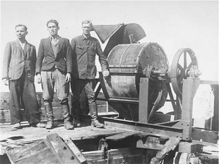

Sonderkommando revolt
The Sonderkommando units were aware that as witnesses to the killings, they themselves would eventually be killed to hide Nazi crimes. Though they knew that it would
mean their deaths, the Sonderkommandos of Birkenau Kommando III staged an uprising on 7 October 1944, following an announcement that some of them would be selected to be
"transferred to another camp"—a common Nazi ruse for the murder of prisoners. The Sonderkommandos attacked the SS guards with stones, axes, and makeshift hand
grenades, which they also used to damage Crematorium IV and set it afire.
As the SS set up machine guns to attack the prisoners in Crematorium IV, the Sonderkommandos in Crematorium II also revolted, some of them managing to escape the compound.
The rebellion was suppressed by nightfall.
Ultimately, three SS guards were killed — one of whom was burned alive by the prisoners in the oven of Crematorium II — and 451 Sonderkommandos were killed.
Hundreds of prisoners escaped, but were all soon captured and executed, along with an additional group who participated in the revolt. Crematorium IV was destroyed in
the fighting, and a group of prisoners in the gas chamber of Crematorium V was spared in the chaos.